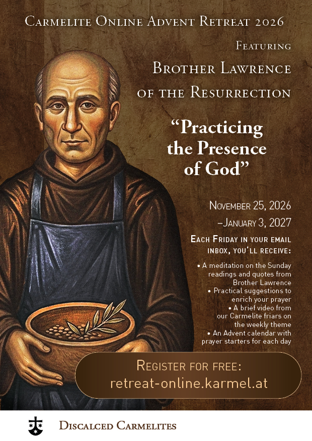

Donate
The Carmelites thank you for every donation you make to support the technical implementation of the retreat!
PayPal
You can donate through PayPal (with a credit or debit card)
account_balance Bank Transfer
You can send your donation to the following account:
Account holder: Teresianischer Karmel AT
Address: Silbergasse 35, 1190 Vienna, Austria
IBAN: AT17 5400 00090028 5875
BIC: OBLAAT2L
Spread the word
Please invite your friends and family to join this retreat by sharing this webpage: retreat-online.karmel.at
If you have any difficulty registering or if there are any problems, please email the retreat coordinators at retreat-online@karmel.at.
We suggest downloading and printing the retreat poster to share at your parish, community, or prayer group. We wish you a blessed Advent season and a fruitful retreat experience!
Materials
